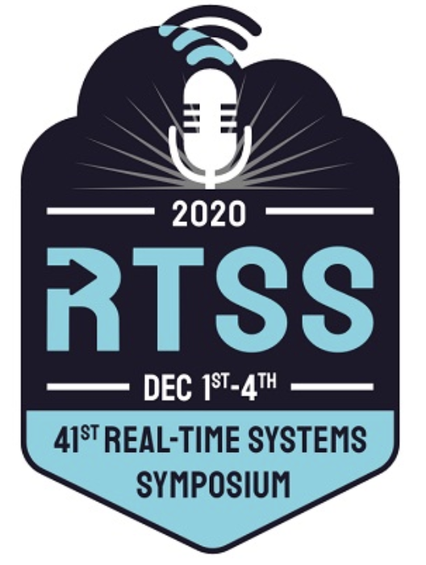

Tutorial: Formal Analysis, Verification and Design of Safety-Critical CPS
Tues 1st Dec 2020, Houston, TX @
RTSS 2020

COVID-19 UPDATE:
Due to the COVID-19 impact, the tutorial is organized in an online fashion and in an asynchronous manner. The instructors provide the videos before the audience can watch the videos before the tutorial Q&A session during RTSS 2020. The tutorial videos are available for RTSS 2020 participants in the conference platform, consisting of three sessions, 1.5 hour for each, hence a total of 4.5 hours. The instructors are available on Dec. 1st from 7:00 am to 7:30 am (CST, UTC-6) for a Q&A session.
For registration, please refer to
the RTSS 2020 registration site
.
Tutorial Abstract
:
Conventional real-time embedded systems have over the past two decades vividly evolved into an open, interconnected form, now known as cyber-physical systems (CPS), that integrates capabilities of computing, communication and control, thereby triggering yet another round of global revolution of the information technology. The underlying safety-critical feature, however, impels the community to tackle the grand challenge concerning analysis, verification and design of reliable CPS. Hybrid systems that seamlessly integrate continuous dynamics with discrete behaviors have been extensively used as mathematical models for CPS, wherein prominent formal techniques, e.g., reachability-based model checking, deduction-based theorem proving and correct-by-construction synthesis, have been developed for ensuring correctness of hybrid systems. In this tutorial, we will start with a lightweight introduction to CPS and hybrid systems in a safety-critical context and then present our efforts over the recent years in testing, verification and design of CPS, particularly addressing inherent features thereof like large-scale, nondeterminism and delayed coupling.
The tutorial is scheduled in three sessions. The first session sketches an overview of formal verification of CPS and Hybrid Automata (HA) as the model for hybrid systems underneath, followed by path-oriented/enumeration techniques addressing bounded model checking of complex HA while tackling nondeterminism therein with an online modelling and verification framework. In the second session, we show how to use proper design patterns to simplify HA verification and contrarily how to exploit HA to assist testing of real-time CPS. We dedicate the third session to the verification and design of time-delayed systems ubiquitously existing in networked and distributed control. We present various approaches to the automatic verification and correct-by-construction design of dynamical systems subject to delayed information exchange, with applications in a typical set of time-delayed dynamics originated from realms of biology, control and transportation.
Target audience
: People who are interested in software engineering aspects of real-time systems and CPS, particularly those who are interested in testing, verification and synthesis.
Contact Information of Presenters
:
Lei Bu
:
Email: bulei@nju.edu.cn
Affiliation: State Key Lab. of Novel Software Technology, Nanjing University, Nanjing, China.
Qixin Wang
:
Email: csqwang@comp.polyu.edu.hk
Affiliation: Dept. of Computing, The Hong Kong Polytechnic University, Hong Kong SAR, China.
Naijun Zhan
:
Email: znj@ios.ac.cn
Affiliation: Institute of Software, Chinese Academy of Sciences, China
Mingshuai Chen
:
Email: chenms@cs.rwth-aachen.de
Affiliation: Chair for Software Modeling and Verification, RWTH Aachen University, Germany
Short Biography of the Presenters
:
Lei Bu
is currently a professor at Department of Computer Science and Technology, Nanjing University, P.R. China. He received his bachelor and PhD degree in Computer Science from Nanjing University in 2004 and 2010 respectively. He has been visiting scholars in Carnegie Mellon University, Microsoft Research Asia, University of Texas at Dallas, etc. His main research interests include formal method, model checking, hybrid system, and cyber-physical system. He has published around 50 papers in leading journals and conferences, including TCAD, TC, TCPS, TPDS, FMSD, RTSS, CAV, DATE, VMCAI, etc. He is an awardee of the Chinese Computer Federation Young Talent Development Programand the Microsoft Research Asia Star Track Young Faculty Program.
Qixin Wang
received the B.E. and M.E. degrees from Dept. of Computer Sci. and Tech., Tsinghua Univ. (Beijing, China) in 1999 and 2001 respectively; and the PhD degree from the Dept. of Computer Science, Univ. of Illinois at Urbana-Champaign in 2008. He joined the Dept. of Computing in the Hong Kong Polytechnic University in 2009, and is now an associate professor. His research interests include cyber-physical systems, real-time/embedded systems and networks, and their applications in industrial control, medicine and assisted living. He has authored/coauthored more than 40 articles in leading publication venues in these fields, including a featured paper in IEEE Transactions on Mobile Computing 2008 May Issue and a paper winning the 2008 best paper award of IEEE Transactions on Industrial Informatics. He is a member of IEEE and ACM.
Naijun Zhan
is a research professor at the State Key Lab. of Computer Science, Institute of Software, Chinese Academy of Sciences, Beijing, China. He received the Ph.D. degree in computer science from the Institute of Software, Chinese Academy of Sciences in 2000, and M.Sc. in computer science and B.Sc in mathematics both from Nanjing University respectively in 1996 and 1993. Prior to joining the Institute of Software, he was a Research Fellow with the Faculty of Mathematics and Information, University of Mannheim, Mannheim, Germany, from 2001 to 2004. His research interests include formal techniques for the design of real-time and hybrid systems, program verification, modal and temporal logics, concurrent computation models, semantic foundations of component and object systems.
Mingshuai Chen
is currently a postdoctoral researcher at the Chair for Software Modeling and Verification, Department of Computer Science, RWTH Aachen University, Aachen, Germany. He received the Ph.D. degree in computer science from the Institute of Software, Chinese Academy of Sciences in 2019, and B.Sc. in computer science from the School of Computer Science and Technology, Jilin University in 2013. His main research interests include modelling, verification and synthesis of hybrid systems, probabilistic program reasoning, and time-delayed systems. He was the awardee of the Distinguished Paper Award at ATVA 2018 and the CAS-President Special Award in 2019.
Duration
: three sessions, 1.5 hour for each, hence a total of 4.5 hours. Lei Bu will present the first session, Qixin Wang will present the second session, while Naijun Zhan and Mingshuai Chen will present the third session.
The end